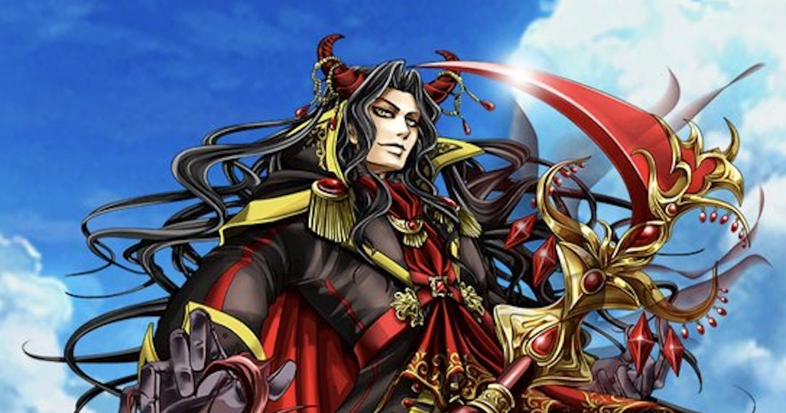
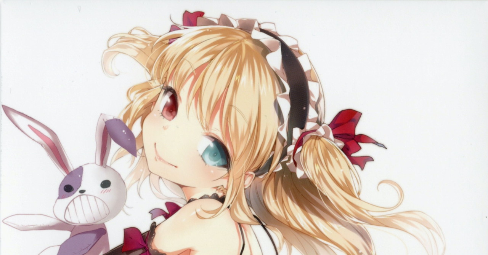
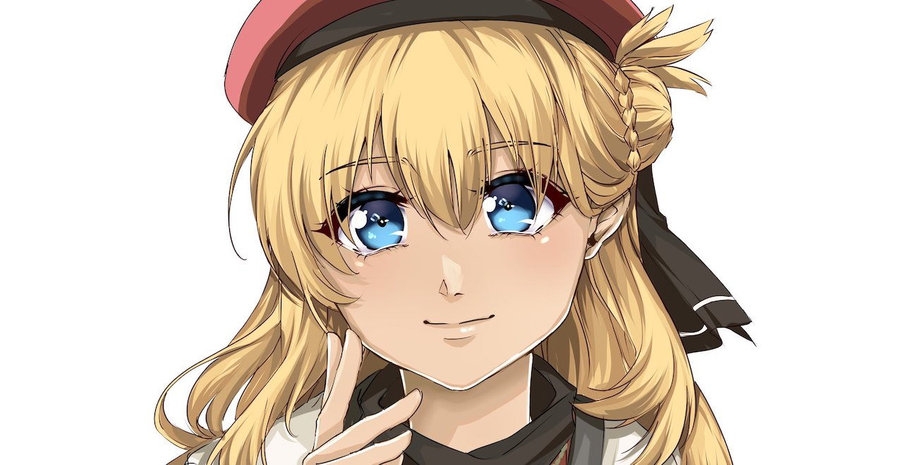
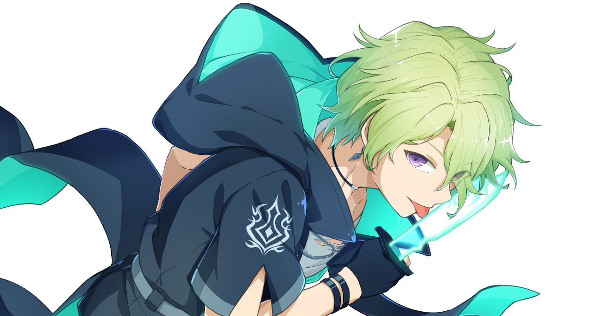
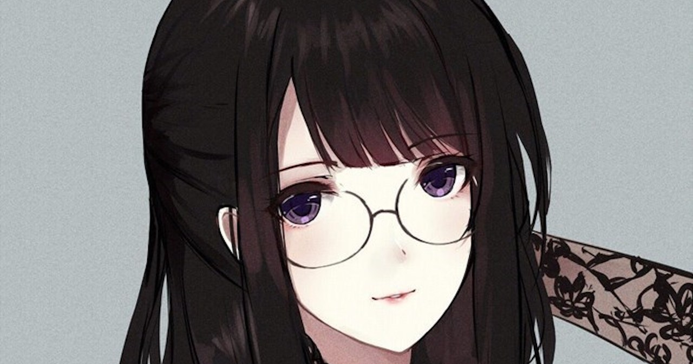
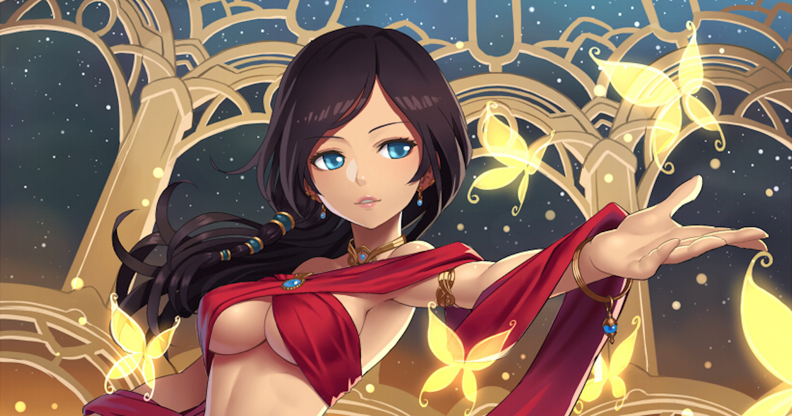
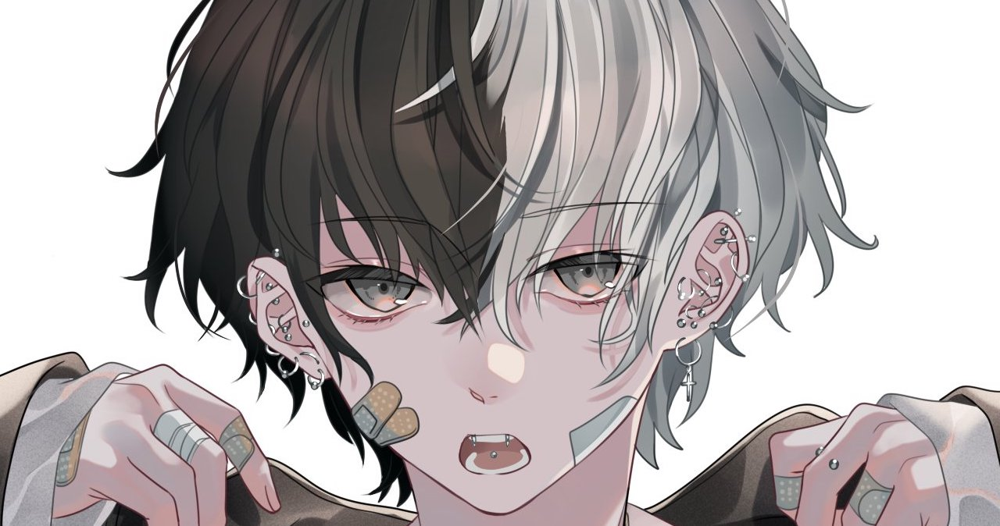
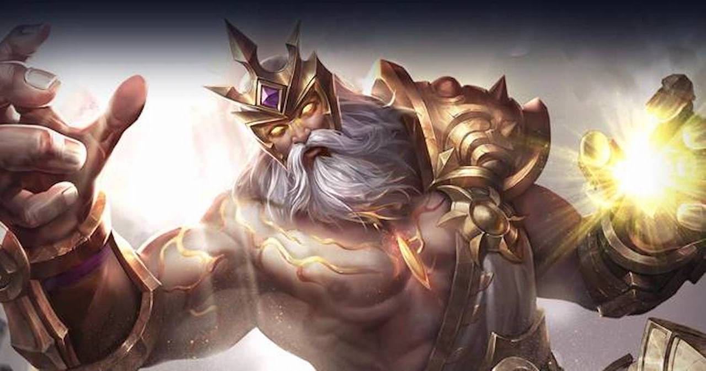
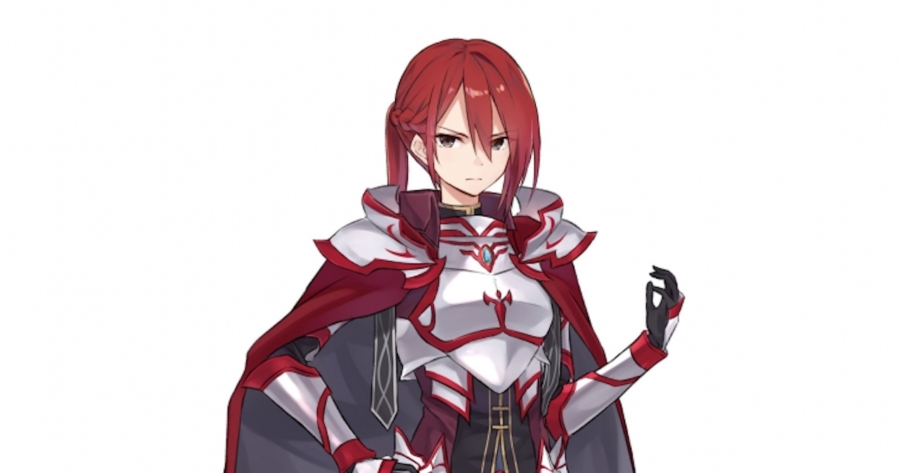
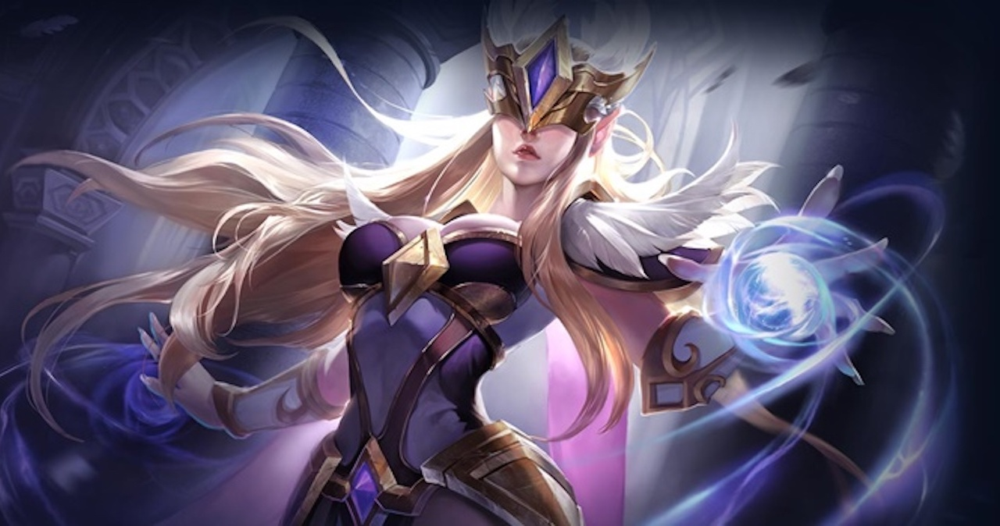

神代から生き続ける魔王。 人間の女性との恋に落ちたが、魔王が人間と恋をすることは許されず、 出陣の不在中に、近衛により愛する女性を殺される。その結果、茫然自失となり、戦争で大敗する。 今は、人として、平和になった世界を観て回っている。

魔王と人との間に生まれた半魔の娘。祖母のエリスと共に、小さな街に暮らしている。 幼い頃に人になる術を身につけ、今は人の生活に溶け込んでいる。 魔法や魔族に対して畏怖することなく、興味津々な変わった少女。母の名前はロクシー。

幼い頃から冒険が大好きで、１０歳を過ぎた頃からあちこちを飛び回っていた破天荒な女性。 古代文明の遺物にはまり、遺物を求めて魔大陸にまでいってしまう。快活で臆さない、非常に活発な性格をしている。 時に優しく、好き嫌いなく誰とでも分け隔てなく接する。 イーラの母であり、ヴォルカスの配偶者。

夫を人魔大戦で亡くした未亡人。10年前、傷だらけの魔族の男からイーラを受け取る。 そこから一人でイーラを育ててきた。娘のロクシーが魔界に入ったことを隣人がしり、 恐れられたのか、嫌われたのか、いつの間にか、住んでいた者たちは転居し、その区画にたった一家族で暮らしている。 娘の影響で、人も魔族も平等に見る感性を持つ、穏やかな女性。

魔王の愛する女性を守る命を受け彼女を守ろうとしたが失敗。死に際に子供を託され祖母の元へ届ける。 そして記憶を操る魔法から秘密を暴かれることを防ぐため己の姿を半魔にし、記憶を抹消した。 現在は演劇団に拾われて、役者、座長を勤める、お調子者の男性。

魔王城で最も優れた呪術師、魔王城の執務を監督するきちきちした女性魔族。 オレンドとは近い立場ということもあり仲が良いが、憎まれ口を叩く仲。魔王が人間の女性ロクシーと一緒にいることに困っている。 ロクシー死去の直前、プロポーズされ、ひっそりと結婚した。

幼い頃から演劇を始め、オレンドが座長を務める旅団の主演女優。 真っ直ぐな心と柔軟さ、面倒見の良さを持つ女性。ちゃらんぽらんなオレンドを支えている。 また、オレンドの、自由で元気なところだけでなく、折れない強い心を知っており、そこにとても惹かれている。

亡くなった魔王の近衛サラの息子。戦争で両親が共に死去し、炭鉱夫に拾われた。 魔王城に向かうヴォルカスとイーラの案内役として冒険に同行する中で、ヴォルカスが魔王であることを知る。 母が願っていた平和への喜びと、人族の奴隷として炭鉱夫をしている自分の惨めさの間で葛藤する。

金と権力の神として、人の世界に存在し続けている神。現在は人間の軍隊の元帥として君臨し、人の姿を取っている。 超常の力を使い、常にヴォルカスと対峙する仇敵。性格は豪胆、見た目は、老齢の騎士。 武器は持たず、己の拳と超常の力のみで戦ってきた。また、常に人の前にたち、先駆者として世界を引っ張り続けている。

人族の騎士。ギルディを師と慕っていて、若いながら、己の中にはっきりとした正義を持っている。 自分が守るべきものを見定め、そこに仇をなす者と判断すれば躊躇なく切り捨てる冷酷な女騎士。 人族の騎士の中で筆頭代表としてヴォルカスと戦い、その心の強さをヴォルカスへ示す。

愛と慈悲の女神としてヴォルカスの中に存在する神。愛とは人により異なるものであり、守りたいと願うその心こそ愛だと説く。 信徒を扇動することなく、人が歩む道を静かに見守っている女神。ヴォルカスの祈りに答え、力を与え、また、ヴォルカスが娘に出会い、 愛の姿に気づくための道標を示す。

「ただ君だけでも、守りたいと願う」各章の台本は本WEBサイトにて公開しています。声劇配信用アプリからお友達同士の遊びまで、ご自由にお使いください。また、作品として一般公開をする場合のみTwitterよりお問い合わせください。

作成予定。リリース日など決まり次第、本WEBサイト更新、及び、Twitterでの告知を行います。なお、複数章に分割して販売する予定です。

作成予定。リリース日など決まり次第、本WEBサイト更新、及び、Twitterでの告知を行います。
ボイスドラマ、アプリに使用した台本をそのままご覧いただけます。１章約５０分で構成しております。兼役もありますが、どうぞご自由に楽しんでください。タップ、または、クリックしてください。
ただ君の世界を気に入ってくれた方へ、少人数でやりやすい短編などをまとめる予定です。なお、作者以外の寄稿も同様に掲載する予定です。